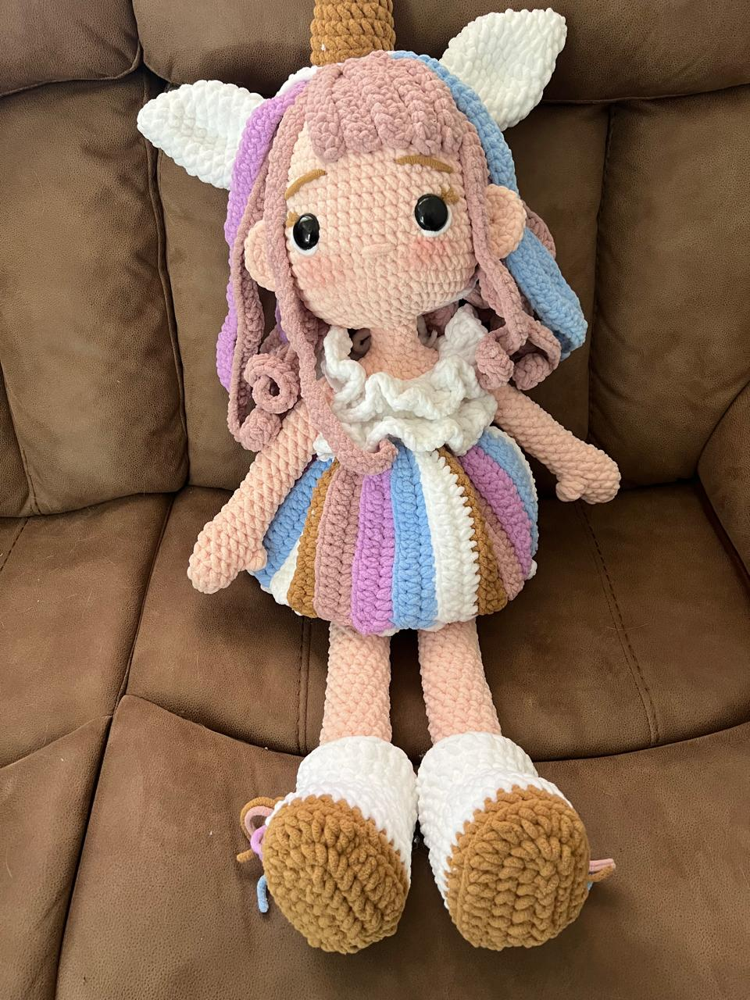

Aquí les dejo una imagen de mi trabajo:
Un rincón lleno de creatividad, hilos de colores y mucho amor por el tejido.
Ver mis creacionesMe llamo Francisca, tengo 41 años, en mi tiempo libre me dedico a tejer, hago amigurumis y prendas.
Aquí les dejo una imagen de mi trabajo:
